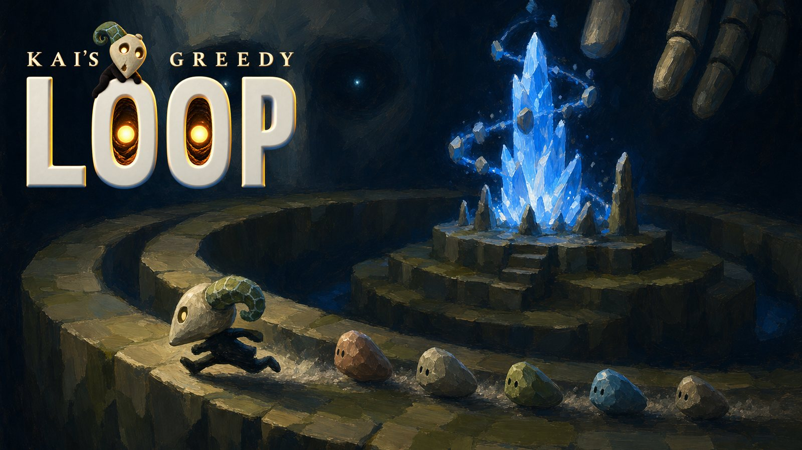
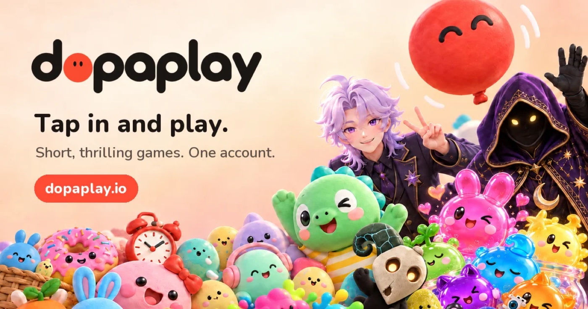
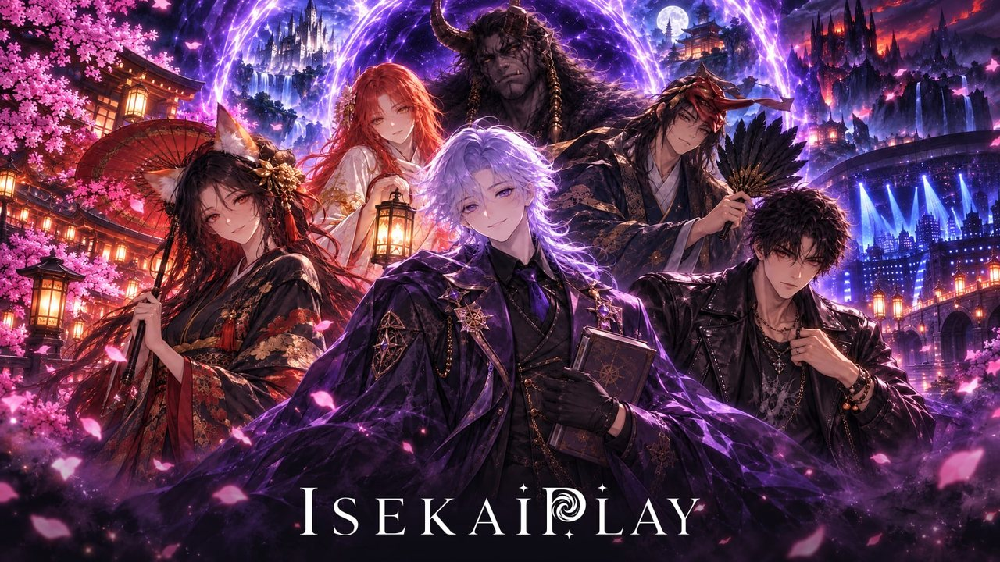

Portfolio: AI as a design material, in games, stories and characters
Make AI a design material.
Tune for people, not bots.
Decide by numbers.
I shape the whole experience of AI products, from what the model says to what the screen shows, and I think entertainment is where AI's future is. At my own studio, Raymind.AI, I build games and stories in code with about 50 AI agents: dopaplay.io holds four games on one account, all on Google Play, and on IsekaiPlay finishing an episode leads into a chat with a character who remembers it. For the Abu Dhabi Government I lead the experience of Wakeel, whose face is one orb in eight states. Earlier I pitched and launched a CookieRun VR game at Devsisters with a 25-person team, took the Kakao Friends characters into Europe from Kakao's first European subsidiary, and led UX for Nike Run Club in London.
- Now
- Abu Dhabi DGE, Product Experience Lead
(since August 2026), Founder, Raymind.AI - Before
- Humain, Devsisters, Kakao IX UK,
Saudi Aramco - Study
- MFA, Goldsmiths
BA, Central Saint Martins
Worked withNikeVolvoBarclaysVirgin AtlanticBNP ParibasSaudi AramcoKakaoDevsistersHumainAbu Dhabi DGE
What the role asks for, and where I have done it
Design core loops and mechanics that would be impossible without AI
On IsekaiPlay, finishing an episode of an original story leads into a one-to-one chat with a character who remembers it, and the story engine gives each job, from classifying a message to writing a key scene, to the model tier that suits it. On Auntie Rabbit a cast of AI regulars listens to one person's story together, and Paldo Saju's masters each keep their own way of speaking.
isekaiplay.comShipped commercial games
dopaplay.io holds four games on one account, all four on Google Play and two on the App Store: a one-finger roguelite, a physics puzzle, a rhythm action game and 3SEC FEED, 200 three-second mini-games you swipe through like shorts. At Devsisters, a company with no XR experience, I started a CookieRun VR game on my own, from the concept and game design to the pitch, won ₩2.5B of internal investment, and launched it on Meta's Quest Store with a 25-person team.
dopaplay.ioAgentic workflows and generative AI in the production pipeline
For each game, Claude Code agents handle the code, builds and QA, and I keep the concept, the game feel and the launch call. Bots with three reaction speeds play every level: POPCHAIN's 300 levels are each tuned to a target win rate, and the bots caught DOPA DASH's HARD levels being cleared over 95% of the time against a 50 to 62% target.
Designing with AIBuild, playtest and iterate
In Kai's Greedy Loop, 758 real plays ended in 21 to 26 seconds, most at the first gate, far shorter than the bots' rounds. I built a bot that reacts late and makes mistakes like a person, measured the first-gate pass rate, and rebuilt the first round's lesson in three steps.
Kai's Greedy LoopPlayer accessibility and cognitive load
Greedy Loop has two inputs: tap to change lanes, hold to lock in the chain. POPCHAIN teaches one thing per round: a five-step coach first, stirring second, bombs third. Wakeel's orb has states that read without a visible text label, and it stills under Reduce Motion.
Wakeel, componentsAI as a design material: a face, a voice, a presence
Wakeel's face is one orb in eight states (idle, listening, thinking, speaking, working, waiting for you, done and offline), moved by one shader and the same on every screen. In the live prototype a request comes back as a plan, and the spoken answer streams in word by word.
Wakeel 04Experimental, early-stage projects run like a startup
The VR game ran like a startup inside Devsisters: one person with a concept and a pitch at the start, a prototype in six months, and the company's first platform partnership with Meta. My studio runs the same way: every change is written down first with the metric to watch, a review date and the point at which it is switched off.
CookieRun VRPrototype fast, in code
I build in code with Claude Code, from HTML5 and JavaScript games to iOS and Android apps and store releases. A new game joins dopaplay's accounts, saves and rankings with one line of SDK, and listings in 22 languages go to the stores by script. On Wakeel, 94 options were built on the real app code over three reviews.
Wakeel 03QA and launch discipline
A build ships only after it fills the quality table for the web, iOS and Android and is checked on a real device. When a bug muted all four games on iOS, I withdrew every submission under review, fixed it and resubmitted. On a game in development, 53 issues I flagged became automatic checks that run on every build.
How I workGames designed for people, and AI with a face, a voice and a memory.
Kai's Greedy Loop was balanced by a bot, then rebuilt when people lasted a tenth as long. CookieRun VR is the game I planned around a 15cm hero and pitched to Meta. Paldo Saju is a chat with master characters, each with their own way of speaking, tuned by the numbers. Wakeel is an approval-first AI with a face in eight states. memory.wiki keeps one memory across every AI tool. The chat products are two AI services where the conversation is the product: a character who remembers you, and a cast who listen together.

Kai's Greedy LoopTuned by a bot, then rebuilt for people
A one-finger arcade roguelite I design and build, with AI agents writing all of its code. A bot with perfect reflexes balanced it; the leaderboard said people lasted about a tenth as long. I gave the bot a person's limits and rebuilt the first minute so the game's two moves are learnt by doing them.

CookieRun VRA 15cm hero in a castle built for people
The CookieRun VR game I started on my own at Devsisters, a company that had never made VR. I planned it around one idea, being a cookie 15cm tall in a castle built for people, pitched it to Meta, and built the team that launched it on Meta Quest as CookieRun: The Darkest Night.

Chat productsIsekaiPlay and Auntie Rabbit
Two AI services where almost everything happens inside the chat. I planned and designed both on my own and built them with Claude Code. On IsekaiPlay an AI character remembers the player and pays attention to them; on Auntie Rabbit a cast of characters listens to one person together, in text and in voice.

Paldo SajuA checkout flow people trust before they pay
An AI consultation where a saju master character hears your worry first, then talks it through with you. Built solo, with around 30 AI agents sharing the operations. In the first three weeks after launch, I measured every step of the funnel and fixed the checkout screen through A/B tests.

WakeelAI decisions matched to the weight of each approval
An app where AI reads a senior decision-maker's approvals at the Abu Dhabi Government first and recommends a decision. I lead its experience design: a decision flow matched to the weight of each approval and the orb that is Wakeel's face, with options built and refined within minutes on real app code by a team of AI agents.

memory.wikiSwitch AI tools, keep your context
A knowledge store that gives any AI the same material with the same context. Planned and built solo, and shipped to nine surfaces: the web, Mac, iPhone and Android apps, three browser and editor extensions, a CLI and an MCP server.
Build small, judge by numbers, keep a record that compounds.
The six steps of one improvement cycle, UX principles, how I design with AI, and what I have done in organisations and teams.
ReadGames, stories and characters, built at Raymind.AI
These are the products where I use AI as a design material: games tuned by bots and then by real players, stories whose characters remember the episode you just heard, and a cast of AI regulars who listen together.
Gameplay loops as they run on dopaplay.io, all four on one account. Select a game to play it in the browser.
In development
In each, AI models made the art and Claude Code agents wrote the code, while I direct the design and review every change.

dopaplay
A game platform where one account holds saves and rankings for four games, all on Google Play: a one-finger roguelite, a physics puzzle, a rhythm action game and 3SEC FEED, 200 three-second mini-games you swipe through like shorts. Levels are tuned by bots, then checked against real play.
dopaplay.io
IsekaiPlay
Ten original stories told as audio drama, web novels and character chat on one account. Finishing an episode leads into a one-to-one chat with a character who remembers it.
isekaiplay.comAuntie RabbitIn beta
A chat companion where Auntie Rabbit and her regulars listen to one person's story together, built on what the worries people shared on Paldo Saju and TarotMasters taught me.
tokkiimo.comI also run paldosaju.com, tarotmasters.app, pastlife.app, memory.wiki and screenstyler.ai. All of them are on raymind.ai.
Work in finance, commerce, sport and entertainment

ReRun
Turned your fastest mile from your Nike Run Club history into a hyperlapse film, stitched from street photos of the route you actually ran. Launched in 16 countries. UX and UI lead.

RunTrack
A web app that makes your own music track from your run data (pace, distance, direction), the weather and the time of day. UX and UI lead.

Global Webshop
Volvo's first e-commerce pilot of its own (UK, Netherlands, Norway). Discovery, gap analysis, user journeys, wireframes and design. UX lead.

Hello Bank! Expert Review
Drew design principles from the four brand pillars of the mobile bank Hello Bank!, and used a scoring system to prioritise the journeys and tasks to improve. Four countries, several languages.

Company-wide design system
A company-wide design system and UX guidelines, applied across several business units. It also covered the digital journey for Saudi women getting their first driving licence.

Kakao Friends in Europe
Kakao's first European subsidiary. Introduced KakaoTalk and Kakao Friends to Europe, with licensing and retail partners and a Winter Wonderland pop-up.
CookieRun VR
From the proposal, team building and Meta partnership through to launch on the Meta Quest Store. A prototype in six months.
Nike Training Club, Barclays, Virgin Atlantic
Led UX for onboarding and AI recommendations in the Nike apps (NRC, NTC), the Barclays mortgage experience and the Virgin Atlantic booking experience.